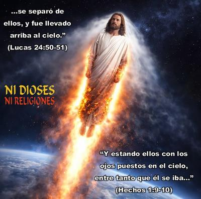

Cada año, millones de cristianos celebran este día el Domingo de Resurrección, también llamado Domingo de Pascua, Pascua Florida, Pascua de Resurrección o solamente Pascua. Un supuesto evento considerado pilar central del cristianismo. Curiosamente, los únicos relatos que existen sobre este hecho se encuentran en los nada históricos evangelios canónicos, que nos proporcionan cuatro versiones distintas de la misma leyenda (Mateo 28:1-10, Marcos 16:1-8, Lucas 24:1-12, Juan 20:1-10). Sí, ¡cuatro versiones distintas! Léelos y lo confirmarás.


Y por supuesto, al analizarlos desde una perspectiva científica y crítica, se desmoronan con una facilidad sorprendente. No hace falta tener una «fe débil» para dudar, sino simplemente aplicar los mismos criterios que usamos en cualquier otro ámbito del conocimiento humano.
Veamos tres aspectos que descartan la realidad de este supuesto evento milagroso:
-
Una resurrección no es compatible con la biología
Desde el punto de vista de la biología moderna, la muerte no es un estado reversible. Cuando ocurre la muerte cerebral, el daño neuronal es definitivo. Las neuronas no pueden regenerarse tras una falta prolongada de oxígeno, y el cerebro —ese órgano del que depende todo lo que llamamos «persona»— deja de funcionar de forma permanente.
Sí, existen ciertas personas que dicen haber «vuelto a la vida», pero en esos casos conviene desmontar el truco semántico: en realidad nunca estuvieron muertos. Se trataba de estados de coma profundo, paros cardíacos temporales, o situaciones clínicas extremas, donde aún había actividad cerebral residual.
Esas llamadas «experiencias cercanas a la muerte» no son para nada viajes al «más allá», sino sólo fenómenos neurológicos bien documentados caracterizados por:
Hipoxia (falta de oxígeno),
Liberación de neurotransmisores,
Actividad anómala en el lóbulo temporal, y
Alucinaciones generadas por un cerebro en crisis.
En otras palabras, la ciencia no sólo no respalda ninguna resurrección, sino que la contradice frontalmente. Pretender que un cadáver en descomposición vuelva a la vida días después no es una hipótesis extraordinaria, es una afirmación extraordinaria que requiere evidencias extraordinarias. Es, sencillamente, una negación directa de todo lo que sabemos sobre fisiología.
-
La ausencia de un cuerpo no es evidencia de que haya resucitado
Los relatos sobre la supuesta resurrección de Jesús no provienen, como dijimos, de ninguna fuente creíble. Provienen exclusivamente de los evangelios: textos escritos décadas después de los supuestos hechos, anónimos en su origen y con versiones contradictorias entre sí. Pero aun así, se presentan como si se tratara de informes forenses.
El argumento central que se suele esgrimir para «comprobar» la resurrección de Jesús, es sorprendentemente débil: «Nunca se encontró el cuerpo.» Y para confirmar que eso es verdad: «Está escrito en la Biblia.»
Imaginemos por un momento a un detective moderno enfrentando un caso así. ¿Aceptaría como prueba concluyente que alguien resucitó simplemente porque su cadáver no apareció? Evidentemente no. ¿Y aceptaría que su única fuente de información es que está escrito en un libro? Por supuesto que no. En cualquier investigación real, la falta del cadáver de la víctima —en caso de ser un hecho confirmado, no sólo porque está escrito en un libro— abriría múltiples hipótesis mucho más plausibles: traslado del cuerpo, error en la identificación, manipulación de testigos, o incluso invención del relato.
De hecho, los propios textos bíblicos anticipan una explicación bastante terrenal: según Mateo, los miembros del Sanedrín pidieron a Pilatos que pusiera guardias en la tumba de Jesús, y lo justificaron así: «no sea que vengan sus discípulos de noche, y lo hurten, y digan al pueblo: Resucitó de entre los muertos.» (Mateo 27:62-65). Es decir, el mismo evangelio ofrece una alternativa mucho más creíble que un «milagro».
Y lo grave es que, como bien señaló el propio Saulo de Tarso (conocido como «el apóstol san Pablo»): «Si Cristo no resucitó, vana es nuestra predicación, vana nuestra fe» (Corintios 15:14). Es decir, si la resurrección no ocurrió, toda la fe cristiana se derrumba. Lo cual es una admisión involuntaria de fragilidad: una religión que depende de un único evento extraordinario… para el cual no hay ninguna evidencia.
Aunque hay otro dato interesante: todavía en sus inicios, el cristianismo consideraba que Jesús había resucitado sólo «en espíritu» (Filipenses 2:9, 1 Pedro 3:18, Hebreos 10:12). Pero al final, para la cultura de aquella gente tampoco resultó difícil asimilar la descabellada idea de que había resucitado físicamente.
-
La ascensión es un hecho físicamente inadmisible
Pero si la resurrección ya roza lo imposible, la ascensión a los cielos entra directamente en el terreno de la fantasía sin filtros, una fantasía completamente descarada.
Relata Lucas en su evangelio que después de haber resucitado Jesús y aparecerse a sus discípulos, los llevó hasta Betania, donde los bendijo, «se separó de ellos, y fue llevado arriba al cielo.» (Lucas 24:50-51). Mientras que según Hechos de los Apóstoles (que se supone es del mismo autor), Jesús «fue alzado, y le recibió una nube que le ocultó de sus ojos [de sus discípulos]. Y estando ellos con los ojos puestos en el cielo, entre tanto que él se iba…» (Hechos 1:9-10). Es decir, según este mito, Jesús no sólo volvió a la vida rompiendo las leyes de la biología, sino que después ascendió o «fue ascendido» también físicamente al cielo, rompiendo las leyes de la física, elevándose hasta desaparecer entre las nubes.
Y es aquí donde la física moderna, con su molesta costumbre de medir la realidad, interviene: Para escapar de la gravedad terrestre, cualquier cuerpo necesita alcanzar la llamada velocidad de escape, Ve≈11,2 km/s. Es decir, unos 40.000 km/h. Por supuesto, no de una sola vez, sino acelerando hasta alcanzar unas tres veces y media el valor de la gravedad.
Pero hay otro detalle: como sabemos, el 1 de abril de 2026 despegó con éxito rumbo a la Luna la misión Artemis II de la NASA. ¿Y se fijaron? La trayectoria de la nave no fue vertical; en primer lugar, debido a una estrategia de seguridad y verificación de sistemas llamada órbita de revisión, pero además porque lanzar una nave en una trayectoria completamente vertical (en línea recta) desde la superficie de la Tierra hacia la Luna. es en la práctica, imposible por las leyes de la física orbital. La Tierra gira sobre su eje y orbita alrededor del Sol, mientras que la Luna orbita alrededor de la Tierra a unos 3.600 km/h. Si apuntaras «hacia arriba» directamente a donde ves la Luna en ese momento, para cuando llegaras allí, la Luna ya no estaría en ese lugar.
Y bueno, no sabemos exactamente hacia dónde se dirigía Jesús, pero ascendiendo verticalmente desde un punto cualquiera de la Tierra, a una hora cualquiera, el rumbo tuvo que haber sido algo random.
Imaginemos entonces la escena con un mínimo de realismo:
Un cuerpo humano acelerando (o siendo acelerado) a velocidades extremas sin desintegrarse.
Sin protección contra la fricción atmosférica.
Sin oxígeno.
Sin traje espacial.
Sin sufrir cambios de presión o temperatura.
Ascendiendo verticalmente hacia cualquier parte del universo.
Y todo esto, en una nube (que para ellos eran sólidas), como una especie de nave, hasta llegar donde los judíos creían que habitaba su dios, Yahvé.
Pero, ¿y qué iban a saber de física los primitivos redactores de «la palabra de Dios»? Sin duda se trata de un relato que refleja claramente la cosmovisión de la antigüedad: un cielo físico situado «arriba», accesible simplemente subiendo lo suficiente. Hoy, sin embargo, sabemos que «arriba» no conduce a ningún reino divino, sino al vacío del espacio.
Y para colmo, no era la primera vez que alguien ascendía al cielo con su cuerpo biológico (sin siquiera un traje espacial); ocho siglos antes había ocurrido lo mismo con Elías (2 Reyes 2:11), de quien los judíos todavía esperan su regreso según lo pronosticado por los «profetas» (Malaquías 4:5-6). Como tampoco fue la última vez, ya que María fue también «elevada» a los cielos (como lo decidió el papa Pío XII el 1 de noviembre de 1950), y Mahoma también lo hizo, llegando hasta donde está Alá, pero montado en una especie de yegua con alas y cabeza de mujer, llamada Buraq.
Por supuesto, hay muchísimas más preguntas respecto a estos personajes que ascendieron con su cuerpo físico: ¿Cómo hacen para respirar?, ¿qué comen?, ¿dónde duermen?, ¿dónde hacen sus necesidades fisiológicas? ¿Se enferman?, ¿qué hacen para no envejecer?… ¿Qué hacen para entretenerse?, ¿discuten sobre la Torá, la Biblia o el Corán?
En realidad, esto revela un patrón común: mitología adaptada a la imaginación de cada cultura. Así que no nos compliquemos, todo esto es sólo magia, igual que en un cuento de hadas, como todo en las religiones.
Por tanto, digamos en conclusión y sin el ánimo de echar a perder esta festividad, que visto desde fuera el «Domingo de Resurrección» se parece menos a un evento histórico, y más a una construcción literaria que fue creciendo con el tiempo, adaptándose a las necesidades teológicas de una comunidad. Se trata a todas luces de un evento ficticio, mitológico, si tomamos en cuenta que: la biología descarta la posibilidad de una resurrección, la metodología histórica cuestiona las fuentes de este relato, y la física ridiculiza una posible «ascensión» sin ninguna tecnología protectora.
Pero aun así, la creencia persiste (en miles de millones de personas). Y no porque esté respaldada por evidencia, sino porque cumple funciones emocionales, culturales y sociales profundamente arraigadas. Sin embargo, una cosa es comprender por qué la gente cree, y otra muy distinta es aceptar que esas creencias describen la realidad.
Ahora, desde una perspectiva científica, la resurrección no es un milagro inexplicable: es un relato extraordinario sostenido por evidencias extraordinariamente pobres. Y la ascensión… bueno, eso ya pertenece más al género de la fantasía que al de la historia o de la ciencia.
[Godless Freeman]
Comentarios
Comments powered by Disqus